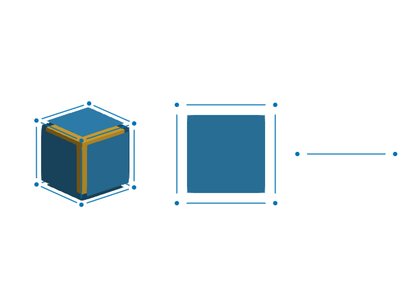
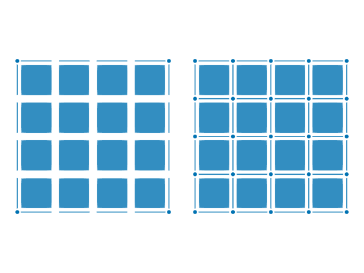

Mesh topology
In this page, we discuss how to "glue" faces in a face complex. A face complex is a mesh with some additional properties (see definition below) that allow us to formalize the meaning of "gluing" faces. This information is needed in many finite element (FE) methods, e.g., to build (high-order) conforming FE spaces, or to integrate at face interfaces.
Local faces
In order to define what a face complex is, first, we need to introduce the concept of local faces. To this end, let $F\in M$ be a physical face in mesh $M$, where $\hat\Omega:=\hat\Omega(F)$ is its reference domain. Let us also consider the chain $\hat C:=C(\hat \Omega)$ used to define the geometry of the reference domain $\hat \Omega$ and let $d$ be the dimension of $\hat \Omega$. See Section Mesh geometry for the definition of these concepts. Let us also define the interface $\Gamma(\mathcal{F})$ of a set of faces $\mathcal{F}\subset M$ as the open set such that its closure is the intersection of the closures of the faces in $\mathcal{F}$, namely $\overline{\Gamma(\mathcal{F})} = \cap_{F\in \mathcal{F}} \bar F$.
With these notations, we define the set of local faces of the reference domain $\hat \Omega$ as the mesh $L(\hat \Omega)$ containing:
- the reference domain $\hat \Omega$,
- the faces in the chain $\hat C$,
- and the interfaces $\Gamma(\{F_1,F_2\})$ of any pair of faces $F_1,F_2\in\hat C$.
The set $L(\hat \Omega)$ contains all faces in the boundary of the polytope $\hat \Omega$. E.g., for a reference edge, it contains the edge and the two end vertices. For a reference square, it contains the square, four edges, and the four vertices at the intersection of the edges. For a reference cube, it contains the cube, six surfaces, twelve edges, and eight vertices (see the next figure).
In the code, one can access the mesh of local faces from a reference domain Ωref::AbstractDomain with Mref = mesh(Ωref). The mesh Mref::AbstractMesh is like any other mesh used in the code and, e.g., it can be visualized as any other mesh shown in next Figure.

Figure: Visualization of the local faces of a reference cube, square, and segment. Faces are shrunk in the visualization to illustrate that they are open sets.
#Code used to generate the figure
import GalerkinToolkit as GT
import GLMakie as Makie
domain = (0,2,0,1,0,2)
cells = (4,2,4)
F3 = GT.unit_n_cube(Val(3))
F2 = GT.unit_n_cube(Val(2))
F1 = GT.unit_n_cube(Val(1))
M3 = GT.mesh(F3)
M2 = GT.mesh(F2)
M1 = GT.mesh(F1)
fig = Makie.Figure()
aspect = :data
ax = Makie.Axis3(fig[1,1];aspect)
Makie.hidespines!(ax)
Makie.hidedecorations!(ax)
shrink = 0.8
GT.makie_surfaces!(ax,M3;dim=2,shrink)
GT.makie_surfaces!(ax,M3;dim=3,shrink)
GT.makie_edges!(ax,M3;dim=1,shrink)
GT.makie_vertices!(ax,M3;dim=0,shrink)
aspect = Makie.DataAspect()
axis = (;aspect)
ax, = GT.makie_surfaces(fig[1,2],M2;dim=2,shrink,axis)
Makie.hidespines!(ax)
Makie.hidedecorations!(ax)
GT.makie_edges!(M2;dim=1,shrink)
GT.makie_vertices!(M2;dim=0,shrink)
ax = Makie.Axis(fig[1,3])
Makie.hidespines!(ax)
Makie.hidedecorations!(ax)
GT.makie_edges!(ax,M1;dim=1,shrink)
GT.makie_vertices!(ax,M1;dim=0,shrink)Conforming meshes
A mesh $M$ is conforming if for any pair of faces $F_1,F_2\in M$ with non-empty interface $\Gamma_{1,2}:=\Gamma(\{F_1,F_2\})\neq\empty$ exists a local face $f_1\in L(\hat\Omega(F_1))$ and a local face $f_2\in L(\hat\Omega(F_2))$ such that
- their images via the coordinate map coincide with the interface, $\Gamma_{1,2}=\phi^{F_1}(f_1)=\phi^{F_2}(f_2)$, and
- they share global node ids, $n(F_1,f_1)=Pn(F_2,f_2)$.
In this definition, $P$ is a permutation matrix and $n(F,f)$ is a vector containing the node ids of $F$ restricted to the local face $f\in L(\hat\Omega(F))$, namely $[n(F,f)]_r:=[n(F)]_l$ with $l=[n(f)]_r$. Both local faces have the same global ids but these ids are allowed to be order differently in each local face. This is why we include the permutation matrix $P$. If these local faces exist, we say that face $F_1$ is conforming to face $F_2$ at the interface $\Gamma_{1,2}$, via the local face $f_1$ (idem for $F_2$). We also say that the local faces $f_1$ and $f_2$, and the interface $\Gamma_{1,2}$ are equivalent.
Face complexes
With these notations we introduce the concept of face complex as follows. A mesh $M$ is a face complex (or a polyhedral complex) if
- it is conforming, and
- it contains the images of all local faces, namely $\phi^F(f)\in M$ for all $f\in L(\hat\Omega(F))$ and all $F\in M$.
Given a mesh $M$ that is conforming, but not a face complex, it is always possible to add additional faces to make it a face complex (see next figure). In the API, this is done with function M2 = complexify(M) from a mesh object M::AbstractMesh. The result M2::AbstractMesh is a face complex. With function is_face_complex(M) one checks if M is a face complex. It returns true form meshes created with function complexify. Note that the chain $\hat C$ used to define the local faces $L(\hat \Omega)$ above is conforming, the set of local faces $L(\hat \Omega)$ is a face complex. In the code, we create the local faces using function complexify and the chain $\hat C$. Many functions in the Mesh generation page return face complexes by default.

Figure: Visualization of two conforming meshes. The mesh on the left, has vertices, edges, and surfaces, but it is not a face complex. The mesh on the right is the face complex obtained by calling complexify on the mesh of the left. I.e., we add the missing faces to make the mesh a face complex.
#Code used to generate the figure
import GalerkinToolkit as GT
import GLMakie as Makie
domain = (0,1,0,1)
cells = (4,4)
mesh = GT.cartesian_mesh(domain,cells;complexify=false)
fig = Makie.Figure()
axis = (;aspect=Makie.DataAspect())
shading = Makie.NoShading
shrink = 0.8
ax, = GT.makie_surfaces(fig[1,1],mesh;axis,shading,shrink)
GT.makie_edges!(fig[1,1],mesh;shrink,dim=1)
GT.makie_vertices!(fig[1,1],mesh,dim=0)
Makie.hidespines!(ax)
Makie.hidedecorations!(ax)
mesh2 = GT.complexify(mesh)
@assert GT.is_face_complex(mesh2)
ax, = GT.makie_surfaces(fig[1,2],mesh2;axis,shading,shrink)
GT.makie_edges!(fig[1,2],mesh2;shrink,dim=1)
GT.makie_vertices!(fig[1,2],mesh2,dim=0)
Makie.hidespines!(ax)
Makie.hidedecorations!(ax)Gluing faces
Let us consider a face complex $M$, a face $F\in M$, and the set of faces $\mathcal{A}(F)$ such that their interface $\Gamma(\mathcal{A}(F))=F$ coincides with face $F$. If these face exist, we call $\mathcal{A}(F)$ the faces around $F$. We refer to gluing faces $\mathcal{A}(F)$ at the their interface $F$ as solving the following two-step problem for each face around $A\in\mathcal{A}(F)$:
- Find the local face $a\in L(\hat\Omega(A))$ and the permutation matrix $P$ such that $n(F)=P n(A,a)$.
- Build a map $\varphi$ such that $\phi^A(\phi^a(\varphi(x)))=\phi^{F}(x)$ for all $x\in \hat\Omega(F)$.
For this problem to have a solution, the mesh $M$ needs to be conforming. This is what allows us to find the local face $a$, the permutation matrix $P$, and the map $\varphi$. In addition, mesh $M$ needs to be a face complex so that the interface $\Gamma(\mathcal{A}(F))\in M$ is also a face in the mesh, i.e., face $F$. In this case, it makes sense to talk about the node ids of the interface $n(F)$, its coordinate map $\phi^{F}$, and its reference domain $\hat\Omega(F)$.
TODO: The code is currently working with the inverse of the permutation matrix $P$, namely $P n(F)= n(A,a)$. In the future we will use the definition of $P$ as in $n(F)=P n(A,a)$.
By solving this problem, we are building a common parametrization of the interface seen from each face around. This is the key ingredient needed to compute integrals at the interface of quantities defined on the faces around. and to build interpolations defined on the faces around that are conforming at the interface.
Once the step 1. of the problem is solved and we have the local face $a$ and the permutation matrix $P$, the map $\varphi$ solution of step 2. is readily computed as
\[\varphi(\xi) := \sum_{n=1}^{\hat N} [P\hat x]_n [\hat s]_n(\xi),\]
where $\hat x:=x(\hat V(a))$, $\hat s:=s(\hat V(a))$, and $\hat N$ is the length of $\hat x$ and $\hat s$. Thus, the only remaining part of the face-gluing problem is step 1. In the code, the solution of this step is encoded for all possible interfaces in the object returned by T=topology(M) for a mesh object M::AbstractMesh. The returned object T is an instance of a type that implements the AbstractTopology interface. We detail now the main methods in this interface.
Face incidence
We define the topology of $M$ as the graph $T$, where the vertices of $T$ are the faces in $M$ and its edges are refined as follows: The edges $(F_1,F_2)$ and $(F_2,F_1)$ connecting two faces $F_1,F_2\in M$ exists in the graph $T$ if
- the two faces are the same, $F_1 = F_2$, or
- the two faces are of different dimensions and have a non-empty interface, $d(F_1)\neq d(F_2)$ and $\Gamma(\{F_1,F_2\}) \neq \empty$.
If two faces are connected by an edge in the graph $T$, we say that the faces are incident, or adjacent. Note that this graph is symmetric.
In the API, The graph is encoded using adjacency lists organized according to face dimensions. The adjacency list containing the edges starting at faces of dimension m and ending at a faces of dimension n is returned by function face_incidence(T,m,n). One recovers all edges in the graph T by calling this function for all possible pairs (m,n) with m in 0:D and n in 0:D, being D=num_dims(M). The result of face_incidence(T,m,n) is a long vector of small vectors of integers encoded via a JaggedArray object, since the inner vectors often have different lengths.
The vector As=face_incidence(T,m,n)[F] has the following interpretation for a face $F$ with face id F::Integer. For m<n, the ids in As are the ids of the faces around $\mathcal{A}(F)$, which are arbitrarily sorted in vector As. For m>n, the vector As contains the ids of the n-faces on the boundary of $F$. In this case, the ids in As are sorted according to the id of the local faces of $F$, namely A=As[f] means that the local n-face $f$ of $F$ with id f::Integer is equivalent to the n-face $A\in M$ with id A. For m==n, the vector As is equal to [F] by definition (a vector with a single integer).
From the mesh topology $T$, we can get, for a given face $F\in M$, the set of faces around $\mathcal{A}(F)\subset M$, and the local face $a\in L(\hat\Omega(A))$ that is equivalent to $F$ for each face around $A\in\mathcal{A}(F)$. Consider a topology object T::AbstractTopology and let $F$ be the m-face in mesh $M$ with id F::Integer. We get the ids of the n-faces around F as As=face_incidence(T,m,n)[F]. For each A in As, we get the id a of the local face of A equivalent to F as follows. We get all m-faces at the boundary of A with Bs=face_incidence(T,n,m)[A], and we find in which position in Bs the id F is located, namely a=findfirst(B->B==F,Bs).
It is also possible to access to the same information using face objects rather than face ids. Given a face object F::AbstractMeshFace one iterates over all faces around of dimension m, and gets the local face equivalent to F:
for A in each_face_around(F,n)
# A is an AbstractMeshFace
a = local_face(A,F)
# a is an AbstractSpace,
# but in the mesh of local faces of A.
endNode permutations
To be able to glue faces $\mathcal{A}(F)\subset M$ at the interfce $F$, we still need a way of obtaining the permutation matrix $P$ such that $Pn(A,a)=n(F)$ for each face around $A\in\mathcal{A}(F)$ and its local face $a$ equivalent to $F$. This information is encoded in the API as follows. All possible permutations for a local face $a$ are contained in the vector k_P = node_permutations(Vref) where Vref::AbstractSpace is the object representing the reference space of $a$. The vector k_P at an index k, is a permutation vectorP. The permutation vector is equivalent to a permutation matrix $P$. Applying the permutation matrix $P$ to a vector $v$, $Pv$ is equivalent to indexing the vector object v with the permutation vector P, namely v[P].
From all possible permutations in vector k_P, we obtain the permutation for local face $a$ as follows. Let A::Integer and a::Integer be the ids of a n-face around $A\in\mathcal{A}(F)$ and of its local m-face $a$ equivalent to $F$. Then, we get the permutation P=k_P[k] for this local face by indexing k_P at the index k obtained as follows k=face_permutation_ids(T,n,m)[A][a]. Note that the function face_permutation_ids(T,n,m) has a similar structure than function face_incidence(T,n,m), both are vectors of vectors of integers, but the former contains the indices used to get the permutation vectors instead of face ids. The permutation vector P is more conveniently accessed given a face object F::AbstractMeshFace as follows:
for A in each_face_around(F,n)
a = local_face(A,F)
P = node_permutation(A,a)
endExample
To wrap up, we show how to glue faces using the following example. For each face $F\in M$ in a mesh, we show how to find the local face $a$ and permutation $P$ for each face around $A\in\mathcal{A}(F)$. In the example, n is the dimension of $F$ and $a$ and m is the dimension of $A$. We check that $n(F)=P n(A,a)$.
In this first version of the example, we use face objects. The variables F, A, and a are AbstractMeshFace objects representing faces $F$, $A$, and $a$ respectively.
import GalerkinToolkit as GT
domain = (0,1,0,1,0,1)
cells = (5,5,5)
M = GT.cartesian_mesh(domain,cells)
m = 2
n = 3
for F in GT.each_face(M,m)
for A in GT.each_face_around(F,n)
a = GT.local_face(A,F)
P = GT.node_permutation(A,a)
@assert GT.nodes(F) == GT.nodes(A)[ GT.nodes(a)[P]]
end
endMain.MeshTopology3This other version uses face ids instead of face objects and explicitly uses the mesh topology. Here, F, A, and a are the Integer ids of faces $F$, $A$, and $a$ respectively.
import GalerkinToolkit as GT
import StaticArrays as SA
domain = (0,1,0,1,0,1)
cells = (5,5,5)
M = GT.cartesian_mesh(domain,cells)
T = GT.topology(M)
m = 2
n = 3
F_As = GT.face_incidence(T,m,n)
A_Bs = GT.face_incidence(T,n,m)
A_a_k = GT.face_permutation_ids(T,n,m)
A_rA = GT.face_reference_id(M,n)
rA_VA = GT.reference_spaces(M,n)
F_nodes = GT.face_nodes(M,m)
A_nodes = GT.face_nodes(M,n)
for F in 1:GT.num_faces(M,m)
As = F_As[F]
for A in As
Bs = A_Bs[A]
a = findfirst(B->B==F,Bs)
k = A_a_k[A][a]
rA = A_rA[A]
VA = rA_VA[rA]
ΩA = GT.domain(VA)
LA = GT.mesh(ΩA)
a_nodes = GT.face_nodes(LA,m)
a_ra = GT.face_reference_id(LA,m)
ra_Va = GT.reference_spaces(LA,m)
ra = a_ra[a]
Va = ra_Va[ra]
Ps = GT.node_permutations(Va)
P = Ps[k]
@assert F_nodes[F] == A_nodes[A][a_nodes[a][P]]
end
endMain.MeshTopology4Summary
We discussed the strategy to glue faces in GalerkinToolkit. It required to introduce concepts including local faces, the faces a round a face, face complex, and the mesh topology. The following table summarizes the key definitions in this page with its corresponding code API.
| Concept | Notation | API |
|---|---|---|
| Interface | $\Gamma(\mathcal{F})$ | |
| Mesh topology | $T$ | T::AbstractTopology |
| Topology from mesh | T = topology(M) | |
| Adjacency list | face_incidence(T,m,n) | |
| Create a face complex | complexify(M) | |
| Check if face complex | is_face_complex(M) | |
| Faces around | $A\in\mathcal{A}(F)$ | A in each_face_around(F,n) |
| Local faces | $L(\hat \Omega(A))$ | L=mesh(Ωref) with Ωref=reference_domain(A) |
| Local face of $A$ equivalent to $F$ | a=local_face(A,F) | |
| Permutation matrix/vector | $P$ | P=node_permutation(A,a) |
This page was generated using Literate.jl.